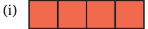
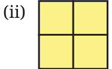
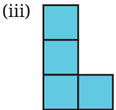
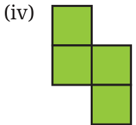
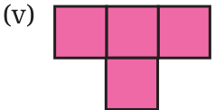
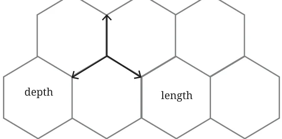
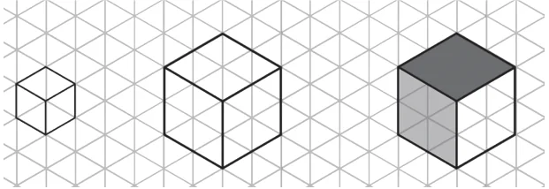
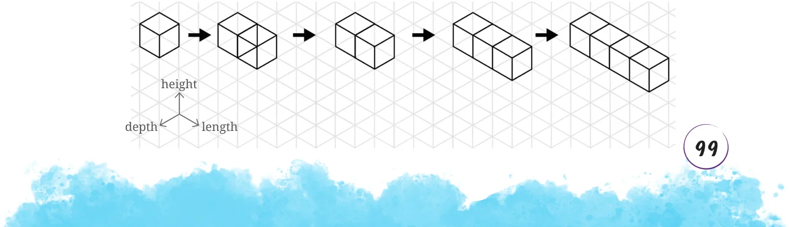
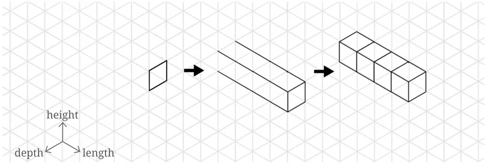
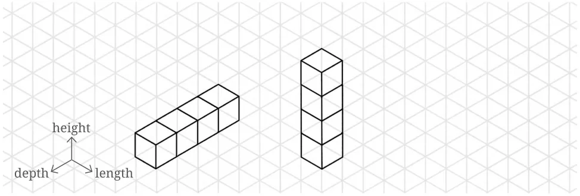

Have you played Tetris? There are five basic shapes in Tetris, corresponding to the different ways of arranging four squares.






Imagine these are cubes, not squares. Draw each of these on your isometric paper (you can find it at the end of the book). As seen in Fig. 4.7, there are three principal axes of the solid shape, which we will call the depth axis, length axis, and height axis. The edges of the grid appear in three different orientations: , and |. We will associate height to | , depth to , and length to .
height

While drawing on the grid, it may be useful to draw edge by edge, counting the number of units you want to go along a given axis. For example, you can draw \(a 1 \times 1 \times 1\) cube as follows. How would you draw \(a 2 \times 2 \times 2\) cube? Feel free to add shading, if it helps you visualise the solid.

The first tetris shape is a row of four cubes joined face-to-face. In order to draw this solid, you will need to choose an orientation for the row of four cubes. Let’s draw it oriented along the depth axis. You could draw it cube-by-cube, but in that case you may need to erase the lines that get hidden by additional cubes. (If you don’t have an eraser, you can also draw faint lines initially, and then darken the visible ones later.)


You could also draw it all at once, by counting edges as you go:

Similarly, you could draw the shape oriented along the height axis or the length axis.

In your drawing, moving in the vertical direction on the isometric paper corresponds to moving along the height axis of the solid. Similarly, moving along the or direction on the paper corresponds to moving along the length or depth axis respectively of the solid. Why is this correspondence between directions on isometric paper and axes of the solid so effective for communicating the shape of the solid? Earlier we observed that parallel lines project to parallel lines. This geometric fact ensures that the three families of parallel edges on the solid (corresponding to height, the length, and depth) project to three families of parallel edges on the isometric paper: |, , and . Moreover, the isometric nature of the projection ensures that the projections of unit distances along the three axes are equal.
Can you try drawing the other tetris shapes on isometric paper?